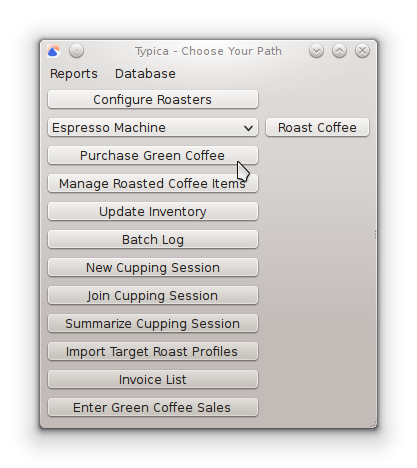
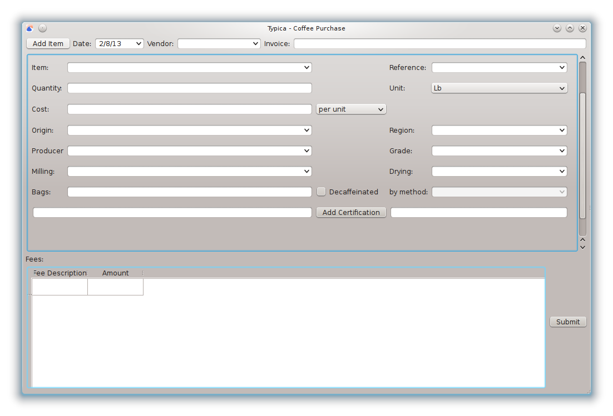
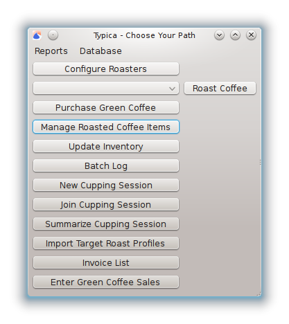
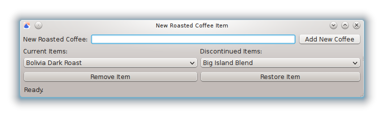
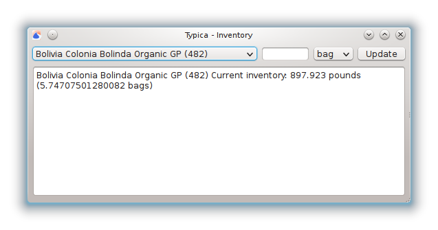
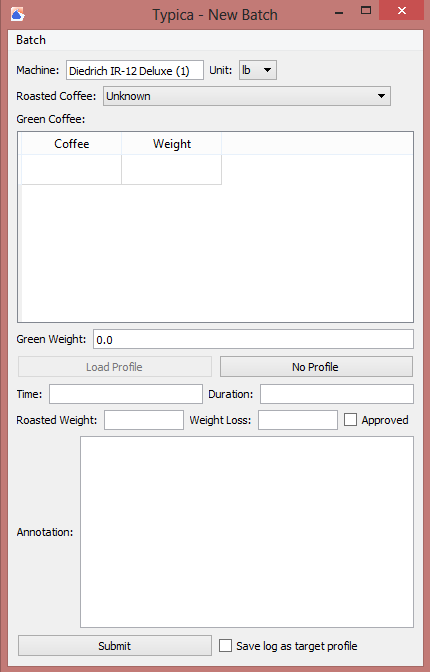

- Green Coffee Purchases
- Roasted Coffee Items
- An Initial Inventory
- Saving and Using Target Roast Profiles
Initial Data Entry
Much of the benefit of using Typica comes from its ability to track coffee inventories and roast profiles. When using the software regularly, data entry is a quick and easy part of the relevant workflows, but when setting up the software initially there may be a large amount of data to enter.
When requesting information from Typica, the quality of the information presented can only be as good as the quality of the data it is given to work with. It is generally recommended to start with only as much data entry as is needed for Typica to present the current state of inventory and to simply be aware of the limitations in obtaining historical information. It may be tempting to enter older records, but the benefits of doing that rarely outweigh the cost of time to enter these older records accurately.
Before entering this data into Typica, you should take an inventory of your current green coffee supply, locate the invoices for coffees you currently have in inventory, and have a list of the roasted coffee items that you produce.
Green Coffee Purchases
As you purchase coffee, data will need to be entered in Typica to track green coffee inventory. This is done by pressing the Purchase Green Coffee button.
At the top of this window you will find information that applies to every item on an invoice. Take an invoice that contains coffee presently in inventory and enter the invoice date in the Date field, the company that sold you the coffee in the Vendor field, and the invoice number in the Invoice field. Typica only requires the Date field, but having the other information may make it easier to find records if they are needed later such as for certification reporting.
This top area also has a Add Item button. This window starts with a set of fields for entering the details of one coffee item. To enter details on more coffees, click the Add Item button until there are enough spaces to enter the details of all of the coffees on the invoice you are entering.
Next there is an area where information about the coffee is entered. There are several fields to note.
Item
This is the name of the green coffee. When you adjust the inventory of this coffee or specify its use in roasting, this is the text that will appear to identify the coffee. This field is required.
Reference
This is intended to be the ICO number of the coffee or, in the case of coffees that do not have that, some other set of markings that uniquely identifies the coffee.
Quantity
This is the amount of coffee purchased. It can be in either pounds or kilograms. This field is required.
Unit
This field allows you to select if the quantity is expressed in pounds or kilograms. Which is selected has no influence on how that data can be retrieved later, but it is important that the quantity is correct in terms of the unit specified. It is easiest to use whatever unit is used on your invoice.
Cost
The cost of the green coffee can be entered in terms of the cost per unit or the total cost of the coffee purchased. Which is specified in the box next to the cost field. This field is required.
Origin
This field is used by some reports to aggregate information based on where the coffee comes from. This is generally the name of the country that the coffee was grown in, but you may find it useful in some cases to deviate from this. For example, some find it useful in the case of coffees from Indonesia to specify the name of the island the coffee was grown on rather than the country. Whichever you decide, you should enter purchase information consistently over time. This field is required.
Region
This field can specify a distinct producing region.
Producer
This field can specify the producer of the coffee.
Grade
This field can specify the grade of the green coffee.
Milling
This field can specify how the coffee was milled.
Drying
This field can specify how the coffee was dried.
Bags
This field specifies the number of bags the green coffee comes in. In some facilities you may empty bags of coffee as they are roasted. If this is the case, the inventory of that coffee can be adjusted to correct the current inventory for measurement errors. This field is required.
Decaffeinated
If the coffee is decaffeinated, this check box should be checked. The decaffeination method is a required field if the check box is checked.
Certifications
If there are any certifications on the coffee that should be tracked, enter these one at a time in the field to the right of the Add Certification button. After typing the name of one certification, press the button. This will add that certification to a list to the left of the button.
Fees
This section describes any fees that apply to the invoice. If you have warehousing, palletizing, shipping, or other fees associated with this invoice, you can enter the fee description and amount in this area. Additional lines in this table will be created as you enter data in this area.
Review the information that you've entered, ensuring that it is accurate and that all required fields have been filled. Once this is done, click the Submit button to save this information to the database.
Repeat the steps in this section until you have entered all of the invoices required for your current inventory. These same steps should be followed as more green coffee is purchased in the future.
Roasted Coffee Items
The coffee roasting process transforms a quantity of one or more green coffees into a quantity of a roasted coffee. Roasted coffee items are associated with target roast profiles and these also maintain an association with the most recent set of green coffees used to produce that roasted coffee. Roasted coffee items are managed by clicking the Manage Roasted Coffee Items button.
When entering an initial set of roasted coffee items, only the top part of this window is needed. Enter the name of the roasted coffee item in the New Roasted Coffee field and then click the Add New Coffee button. Note that if you produce items with different roast profiles, these should be different roasted coffee items even if they are produced from the same green coffee. Items that are produced through additional processing after roasting such as flavored coffees or blends that are assembled from multiple roasted coffees need not be entered, but the component roasted coffees should be entered. As you enter these roasted coffee items they will be added to a list under Current Items.
As you roast coffees, you may find that you no longer produce a particular roasted coffee. It is generally a good idea to remove this item from the current set of roasted coffee items so that you cannot accidentally specify that you are producing something that you do not presently roast. To do this, select the item from the Current Items list and then click the Remove Item button. The item will no longer appear as an option when entering the details of a batch to roast and it will be moved to the Discontinued Items list.
If you later resume the production of a previously discontinued roasted coffee item, you can restore the existing item rather than create a new one. To do this, select the item from the Discontinued Items list and click the Restore Item button. This will remove the item from the Discontinued Items list and add it to the Current Items list. This will make that roasted coffee available to select when roasting coffee.
When you are finished altering the set of roasted coffee items, close the window.
An Initial Inventory
You may periodically wish to take an inventory of your green coffee supply and update the information in Typica to reflect reality. This should at least be done after using the last of a green coffee to set the inventory to 0, but if it is possible, this can be done after emptying any bag of coffee.
Click the Update Inventory button to bring up the window seen above. At the top you will see a list of green coffees with an inventory that is not 0. Selecting an item will change the text area at the bottom to indicate the name of the green coffee item and the current inventory in both pounds and bags of coffee.
To adjust the inventory of the currently selected item, enter either the number of bags or the number of pounds of coffee remaining in inventory, select either bag or lb from the box next to this field, and click the Update button. The text area at the bottom will change to reflect the change you have just made in the inventory.
Note that inventory adjustments take effect immediately. Ensure that data on any roasting batches has been sent to the database before making inventory adjustments on these coffees.
Saving and Using Target Roast Profiles
Each roasted coffee keeps track of the most recent target roast profile if one has been specified for this item. For the initial data entry you will not have any target roast profiles as these have not yet been entered. The easiest way to enter a target roast profile is to roast a batch of coffee to that profile and let Typica record that data for you.
For this step you must have already configured Typica for your roasting equipment. If you have not done this, please do so now.
Select the coffee roaster you will be using and click the Roast Coffee button. This will bring up a window showing the temperature measurement channels that you have set up for that roaster, a timer indicating the duration of the current roast, buttons for marking the start and end of the batch, a table capable of showing both the target roast profile and your current batch data at various levels of detail, and a graph that can show the same measurement data. Other things may appear as well depending on how you have configured Typica for this machine.
From the Batch menu, select New Batch. This will bring up a window where you can enter the details for a batch of roasted coffee. At the top you will see the name of the coffee roaster you are using and you can select the unit that will be applied to all weight measurements. You can select grams, kilograms, ounces, or pounds.
Next you can select the roasted coffee you will be producing. This is the list of current roasted coffee items that you created previously. This field is required.
If you have roasted this coffee previously and the green coffees that were used are all still available to roast, the coffees will automatically be selected in the Green Coffee section. The first time a coffee is roasted, that information is not available to Typica so you will need to select that information manually. Cells in the first column of this table will bring up a list showing the currently available green coffees. The weight should be entered in the uit specified at the top of the window. As you enter information, additional rows will be added to accomodate coffees that are blended prior to roasting. Both the green coffee used and the weight of each green coffee are required fields.
When you have finished entering information on the green coffee, the Green Weight field will be calculated automatically. This field must not be 0 when the batch is submitted to the database. Roasting a batch of no coffee makes no sense and entering nonsense will adversely affect the quality of data you can get out of Typica.
If you had a previously saved target roast profile for the selected roasted coffee item the Load Profile button will be available. If a target roast profile is not available, if you would prefer to roast without a target roast profile, or if you would prefer to obtain target roast profile data from a different source, you will want to click the No Profile button. This brings the previous window up and associates the roasting data with the batch you have just entered details for. You can enter the details of as many batches as you like before roasting, but you must press either the Load Profile or No Profile button in the window with information about the batch you will roast prior to starting each batch.
If you have information from a previous roast displayed, start by selecting Clear Log from the Log menu. Once you are ready, click the Start Batch button while simultaneously starting the roasting process. Typica will record the details of your batch. When you have finished roasting the coffee, click the Stop Batch button while simultaneously halting the roasting process.
When you click the Stop Batch button, the New Batch window will return. You should see that it has entered information in the Time and Duration fields for you.
You may select New Batch from the Batch menu if you would like to start roasting another batch of coffee immediately. Once the batch is cooled, weigh the coffee and enter the roasted weight. A percent weight loss will automatically be calculated.
Assuming you have roasted this coffee to your desired roast profile, click the check box next to Approved and the check box next to Save log as target profile. The former box should be checked for every batch that was roasted correctly, but once a target roast profile has been saved, there is no need to check the latter on subsequent batches unless there is a desire to alter the target roast profile.
If you would like to make a note of any information not in the recorded roasting data or elsewhere in the New Batch window, that information can be entered in the Annotation field.
Review the content of the window and ensure that all of the data has been entered appropriately before clicking the Submit button.
Congratulations! You have just saved a target roast profile for a roasted coffee item. The next time you roast that coffee you will be able to see the data from this batch next to the data from the current batch. Repeat this process for all of your roasted coffee items to conclude this initial data entry.